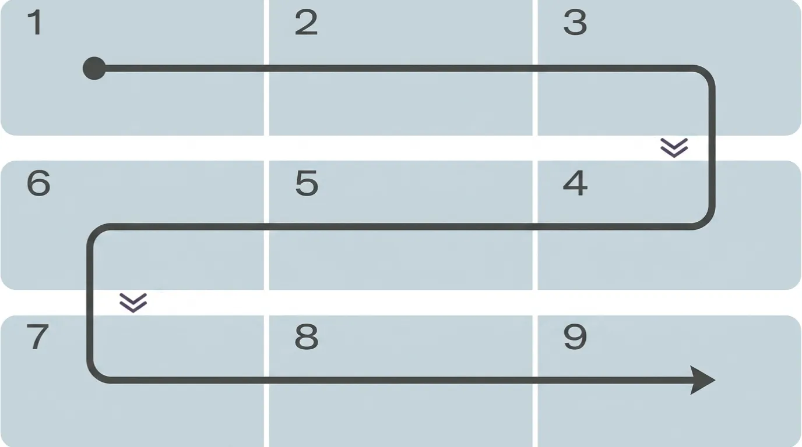

画面
項目リスト
項目管理
カテゴリ管理
表示設定
カテゴリ名を表示
?
完了済みを下へ移動
?
表示列数
?
1列
2列
3列
準備モード・実行モードの項目にカテゴリ名を表示します。
項目管理では、確認のため常にカテゴリ名を表示します。
チェック後に完了済み項目を下へ移動します。
OFFでは位置を固定します。
3列表示の見方

矢印の順にチェックします
データ管理
バックアップをエクスポート
バックアップをインポート
ヘルプ
使い方を見る
一括追加
一括削除
項目を追加
一括追加
一括削除
カテゴリを追加
カテゴリを追加
カテゴリ名
キャンセル
保存
項目を追加
項目名
カテゴリ
-- カテゴリなし --
キャンセル
保存
キャンセル
削除する
項目を一括追加
1行ごとに1項目を入力してください。
項目名,カテゴリ名
項目リスト
キャンセル
追加する
カテゴリを一括追加
1行ごとに1カテゴリを入力してください。
カテゴリ名
カテゴリリスト
キャンセル
追加する
3列表示の見方
矢印の順にチェックします
OK